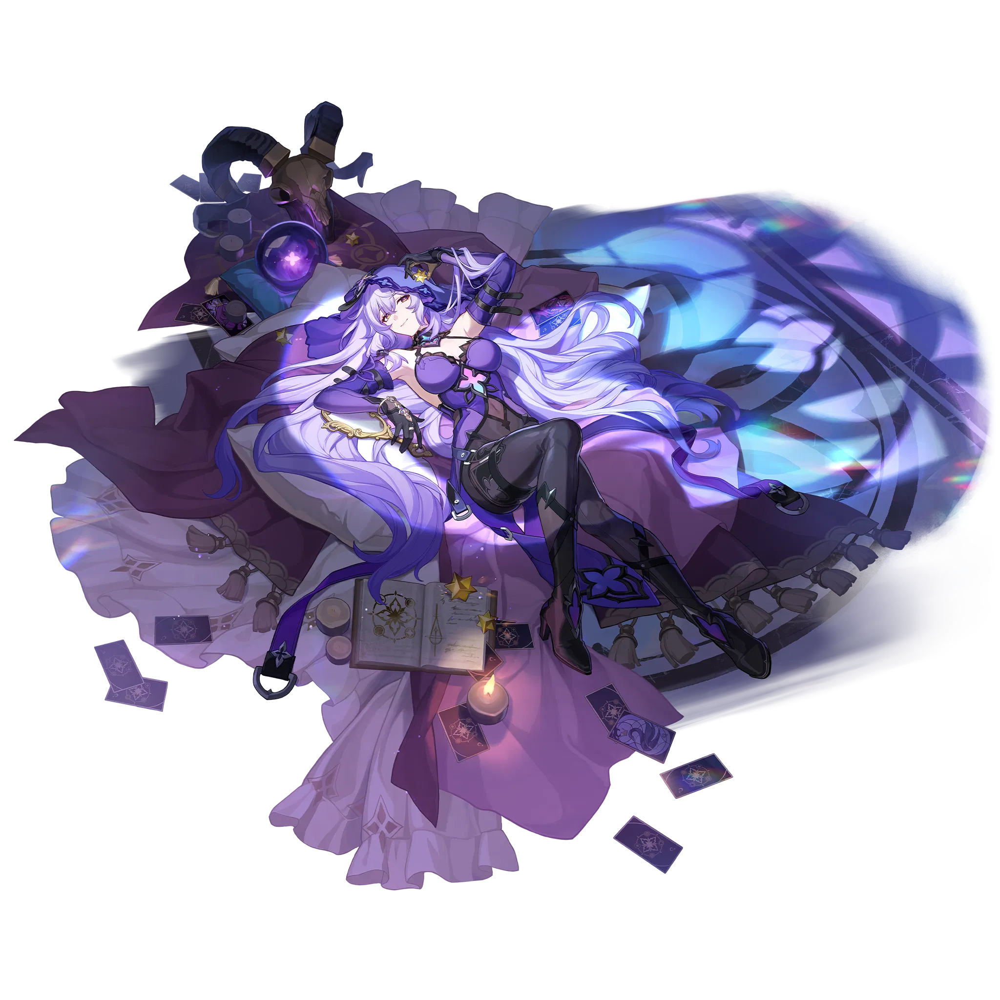
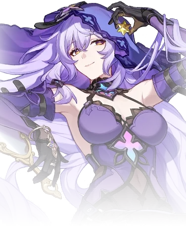

Descripcion del personaje
Cisne Negro (Black Swan) es un personaje enigmático de Honkai: Star Rail que pertenece al Jardín de la Remembranza, donde desempeña el rol de guardiana de memorias. Su personalidad es introspectiva y misteriosa, y tiene el poder de conectar con recuerdos y el flujo de información para percibir aspectos ocultos del destino y de las personas. Como personaje de la vía de la Nihilidad y elemento Viento, aplica el estado de “Arcana” en combate, causando daño gradual (DoT) que debilita a sus enemigos con el tiempo
Cisne Negro en Honkai: Star Rail es una figura sombría y compleja, parte de la Estrategia del Jardín de la Remembranza, que actúa como una guardiana de memorias y destinos. Con una habilidad para ver el flujo de información y los destinos de otros, Cisne Negro prevé los futuros oscuros y trata de influir en los acontecimientos desde las sombras.
Introduccion al personaje
Como personaje alineado con la vía de la Nihilidad y el elemento Viento, usa sus habilidades para debilitar y erosionar las defensas de sus oponentes con efectos de daño gradual.Su habilidad principal aplica el estado "Arcana" a los enemigos, un efecto de daño a lo largo del tiempo (DoT) que debilita sus defensas y les causa daño continuo. También cuenta con habilidades de área para afectar a múltiples oponentes, lo que la convierte en una opción estratégica contra enemigos resistentes.
Cisne Negro es ideal para equipos que buscan controlar el combate debilitando a sus enemigos progresivamente.

Calidad del personaje

VIA del personaje
Nihilidad
Estadisticas del personaje
- PV: 1125
- ATQ: 620
- DEF: 509
- VEL: 102